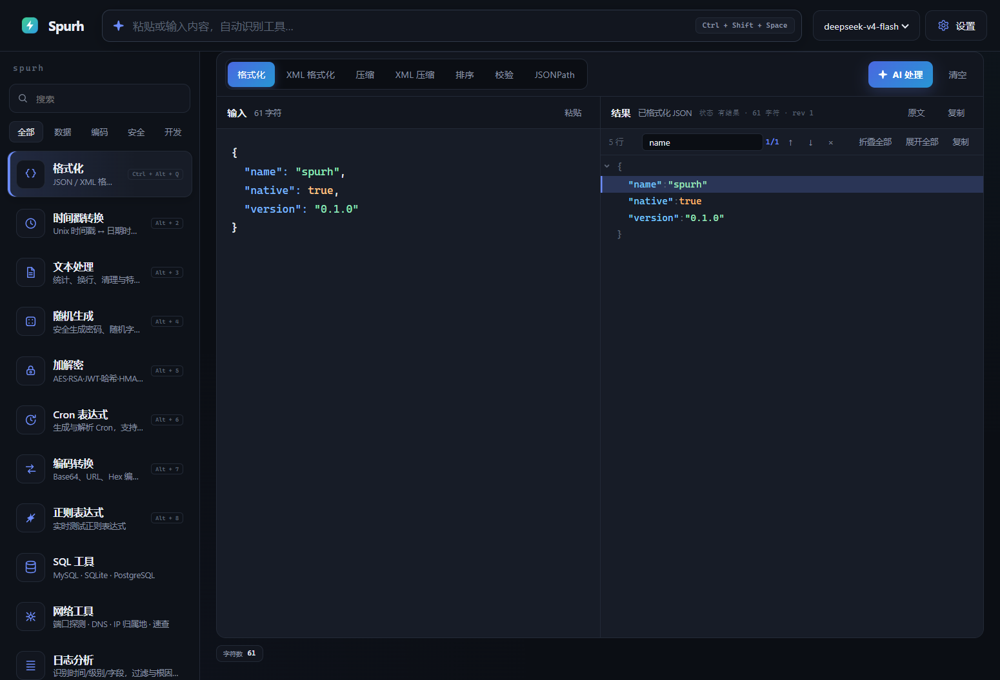

粘贴任意内容，Dispatcher 自动识别意图并选择最佳工具；SQL、SSH、网络、日志等重型能力以产品级面板呈现。一切数据留在本地。

从粘贴到结果，只有一步的距离。
粘贴即路由，置信度排序，可手动覆盖。
MySQL · PostgreSQL · SQLite 客户端。
xterm.js 多标签终端。
OpenAI 兼容流式接入。
敏感数据不出本机。
键盘优先，零多余 UI。
点击右侧缩略图切换，点击大图可放大。
检测器与执行器都属于插件，内置能力与第三方能力使用同一协议。
// 一个完整的 Spurh 插件只需 20 行 const plugin = { id: 'acme.example', name: 'Example', actions: [{ id: 'run', label: '运行' }], detect: (input) => input.startsWith('example:') ? { confidence: 0.9, reason: '检测到 example 前缀' } : null, execute: (_action, input) => ({ output: input.slice(8) }), }; runtime.register(plugin);
不需要。面板会恢复上次使用的连接并自动重连，连接池复用让临时表与事务跨命令保持。
在。打开的标签与活动会话会持久化；重启后仅活动标签自动重连，其余按需连接。
存在系统钥匙串（Windows Credential Manager / macOS Keychain / Linux Secret Service），由操作系统加密保护，应用目录不落明文。
只有你主动点击「AI 处理」才会把当前输入发送到已配置的端点；端点地址与模型完全由你控制。
Node.js 20+ 与 Rust 1.80+ 即可。
npm install npm run tauri dev # 桌面应用 npm run check # svelte-check npm test # vitest